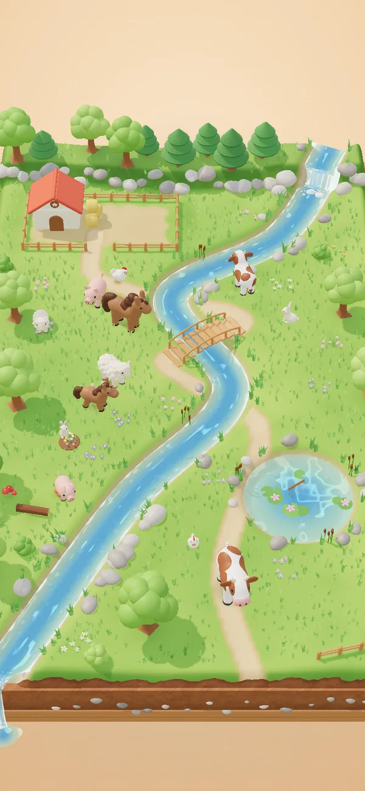
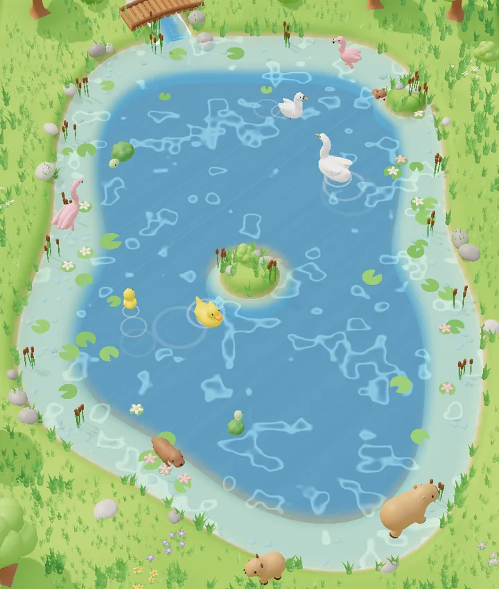
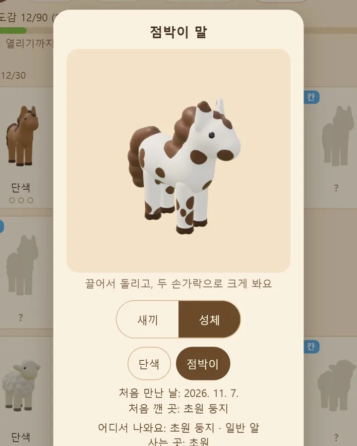
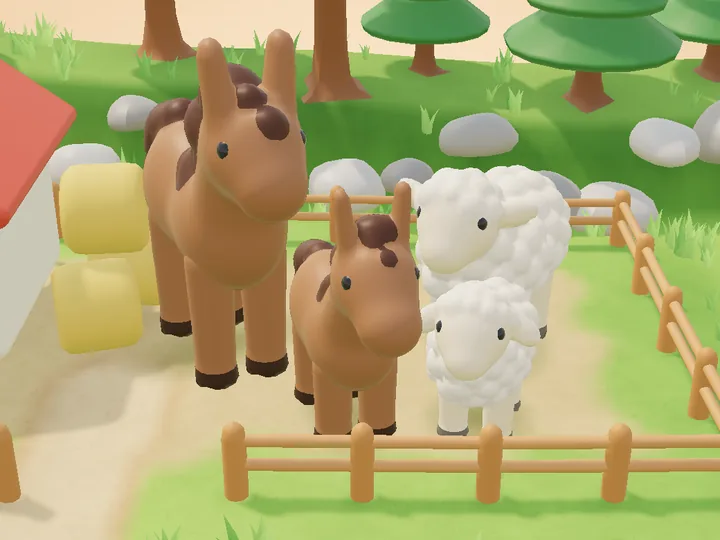

オープンベータ
トイブルック
おもちゃのフィギュアみたいな動物をたまごからかえして、小さなすみかで育てて集める、いやしの収集ゲームです。
個人がつくった無料のオープンベータです。ゲーム内に課金や広告はありません。
インストール不要で、スマホのブラウザですぐあそべます。集めた動物はその端末に保存されます。ベータ期間のデータは正式リリースのときにリセットされます。
お知らせメールは14歳以上の方だけお申し込みいただけます。
申し込みフォームとご意見フォームは韓国語です。

こんなゲームです
ゆっくりながめて、ひとつずつ集めるゲームです。すみかごとに、まわりの音や効果音がちがいます。
-

たまごからかえります
巣にたまったたまごをふ化スロットに入れて待つと、だれが生まれたかカードで見せてくれます。
-

草原と池
草原にはウマ・ヒツジ・ウシ・ブタ・ウサギ・ニワトリ、池にはアヒル・ハクチョウ・カメ・カワウソ・フラミンゴ・カピバラがくらしています。図鑑を少しうめてハートを集めると、次のすみかがひらきます。
-

雪原
池の次にひらく、雪につつまれたすみかです。ペンギン・ホッキョクグマ・アザラシ・ホッキョクギツネ・トナカイ・シロフクロウがくらしています。
-

図鑑で3Dに
出会ったなかまは、図鑑で指でくるくる回して大きく見られます。こどもの姿とおとなの姿、出会ったほかのもようを切りかえられて、はじめて会った日も書いてあります。
-

こどもからおとなへ
生まれたてのこどもは頭が大きくて足が短めです。ごはんをあげて少し待つと、おとなに育ちます。
-

質感のちがうなかまたち
同じウサギでも、ゼリー、ガラス、青磁、染付、螺鈿のように質感や色がちがいます。図鑑とかざり棚にひとつずつ集めてみてください。
-

すみかのもようがえ
ハートでかざりを買って、置いて、回して、地面をぬって、土地を広げます。もようがえした様子は、もようがえコードでやりとりできます。
-

写真モード
ボタンをかくして、近くから低い目線でとれます。朝・夕焼け・夜などの時間、雨・きり・にじの天気、フィルターとフレームをえらんで写真に保存します。
オープンベータなので、画面は少しずつ変わることがあります。ベータで集めた動物やもようがえは、正式リリースのときに最初からになります。
よくある質問
集めた動物はどこに保存されますか？
あそんだ端末のブラウザに保存されます。保存データはサーバーに送らないので、ほかの端末やほかのブラウザでは見えません。クッキーを使わない、まとめた利用統計だけを送ります。ゲームの設定でオフにできます（プライバシーポリシー 10）。
ブラウザの履歴やサイトデータを消すといっしょに消え、シークレットウィンドウではウィンドウを閉じると消えます。ゲームの 設定 › セーブのバックアップ でバックアップコードを作っておけば、そのコードでほかの端末でもつづきからあそべます。
iPhone・iPadでは、Safariの共有ボタン ›「ホーム画面に追加」からひらいてあそぶと、しばらくあそばなくても記録が安全です。機種を変えるときはバックアップコードを使ってください。
ベータが終わるとどうなりますか？
ベータ期間のデータは正式リリースのときにリセットされます。ベータで集めた動物やもようがえは引きつがれず、正式リリースで最初からはじまります。
スマホでアプリのように使うには？
ゲーム画面でブラウザのメニューから「ホーム画面に追加」をおすと、アイコンができます。アイコンをおすと、アドレスバーなしでひらきます。
- iPhone Safari：下の共有ボタン › ホーム画面に追加
- Android Chrome：右上の ⋮ › ホーム画面に追加（またはアプリをインストール）
一度ひらいたすみかは、インターネットがなくてもひらけます。iPhoneでは、ホーム画面のトイブルックとSafariの保存は別々なので、Safariで集めた動物をうつすにはバックアップコードを使ってください。
ご意見や不具合はどこに送ればいいですか？
こちらのご意見フォームか、ゲームの 設定 › ご意見を送る から教えてください。お名前やメールアドレスはききません。フォームは韓国語ですが、日本語で書いていただいてだいじょうぶです。
不具合があったときは、ゲームの 設定 › 不具合を知らせる をおしてください。ゲームのバージョンと端末の種類、最近のエラーがコピーされます。フォームの入力らんにはりつけて、起きたことを書いて送っていただけると、直すときにとても助かります。
お知らせを受けとる
アップデートのお知らせをメールで受けとったり、つくっている様子をThreadsでのぞいてみてください。
14歳以上の方だけお申し込みいただけます。
あそんでみた感想はご意見フォームで教えてください。お名前やメールアドレスはききません。